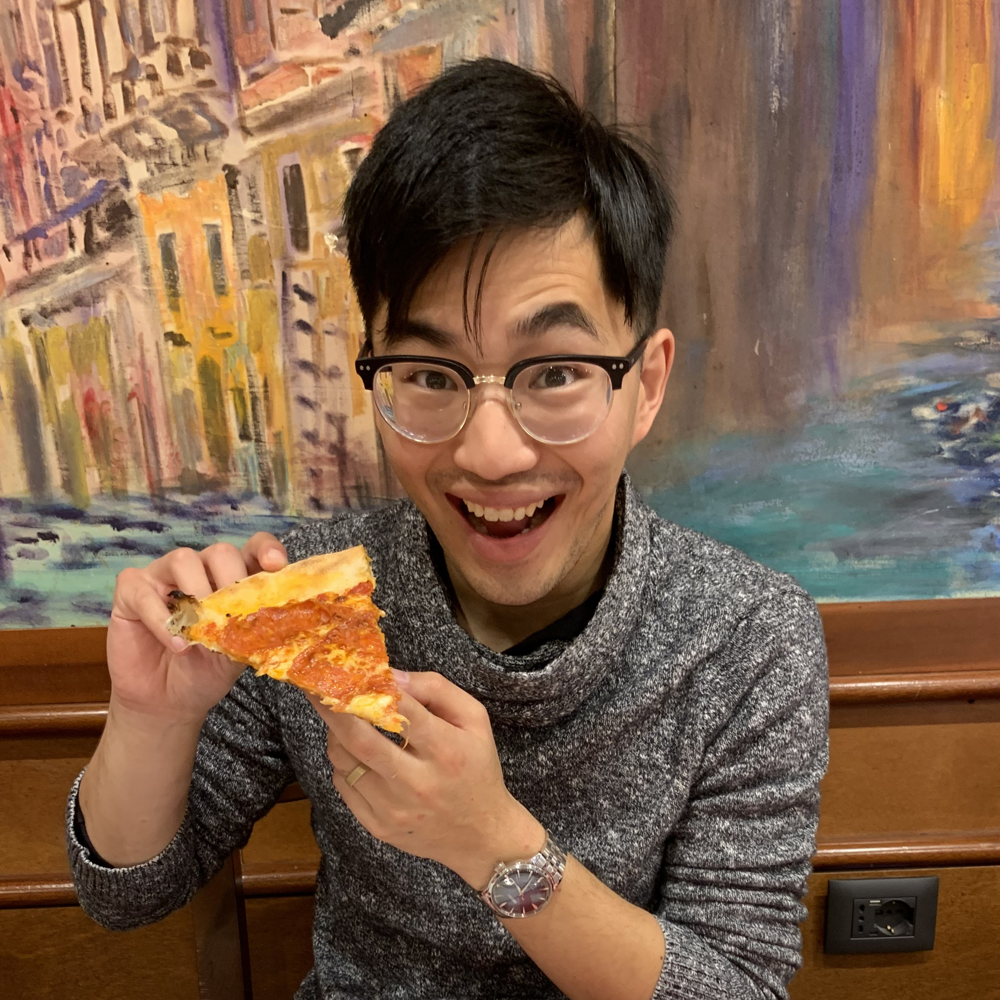
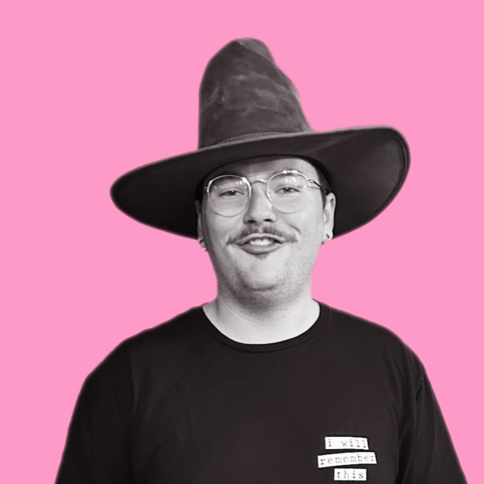
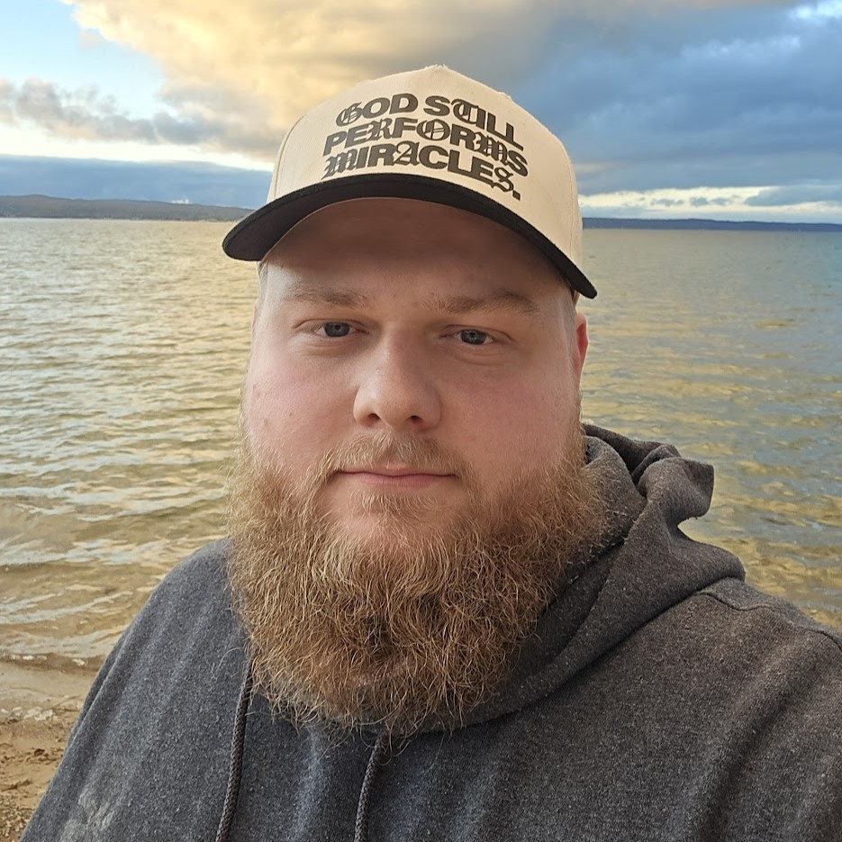

We recognize that church groups often have a reputation for being awkward, forced, and cringey. But we believe that they can be fun, life-giving, and deeply transformative! Gatherings are our response to this reputation. Vineyard Gatherings are mid-sized discipleship communities that meet a couple times per month in homes all across the city
We've partnered with The Dayton Vineyard in leading a gathering that aims to provide a place for people to connect with each other on a deeper level, build meaningful relationships, grow in their faith, and come together to change our city!
Gathering leadership teams are split into three types of leaders: UP, IN, and OUT
UP
leaders focus on spiritual formation. They work to equip people to pursue God and
grow in their love for Jesus
IN
leaders focus on community and hospitality. They work to equip people to love
one another
OUT
leaders focus on outward mission and the Good News. They work to equip people to
engage in a common mission

Matt Pyo
UP Leader
Hi! I'm Matt, one half of the “up” leaders of our gathering. I found this gathering in a season of my life where I felt satisfied in the Lord, yet I longed for community of people in the same stage of life as me. He led me to the vineyard, and through this community I found even greater depth in Him than even before! We strive to connect to each other and to Him, and we hope you feel His love through His body, whether that's through us or someone else! Thanks for checking us out!
Lydia Pyo
UP Leader
Hello future friend! My name is Lydia and I am so honored to get to lead such a diverse group alongside my beloved husband and dear friends. I so value getting to have people who are so different than each other unite over their shared love of the Lord and desire to grow. If you're looking for a safe place to ask those hard questions, community to do life with, or a sacred space to worship and learn, that is at the heart of our gathering. We would be delighted to have you!
Lyndsi Moriconi
IN Leader
Hey, my name is Lyndsi Moriconi and it's wonderful you're interested in our Gathering! If I could sum myself up in a few sentences, this is what I'd say. I absolutely ADORE board games (ask me about my collection). In conversation if I had to pick one side, talking or listening, I'd pick listening. It's my favorite thing to see people open up about their life! Finally don't get me started on cats because I have two big boys and I LOVE to show pictures of them! With all of that being said, I'm also one of the IN leaders. My goal is to create a welcoming, fun, and strong-knit community of friends. If you wanna check out our Gathering please reach out, say hi, and give me a hug if you want because I'd be honored to meet ya and get to know you too!

Landon Moriconi
IN Leader
Hey guys, I'm Landon. I am one of the in leaders for our gathering. I am a really big extrovert so I'd love to meet you! One of my favorite things is writing and recording music. I love music, it's been part of my life for as long as I can remember. I also intern with the church helping out with the youth ministry.

Josh Ehlinger
OUT Leader
Hey! 👋 I'm Josh, and it's awesome that you are taking the time to look into our gathering. We are a community of people who love to seek out the Lord and live life together. I think that it is really important that we not only spend our time looking inward to the group but also out into our local communities. God has such a huge heart for his people, and we have the honor of sharing his light with everyone we interact with. I would love for you to come alongside us and show the practical love of God to our city! This group has been an enormous blessing in my life, and I can't imagine doing life without them. I pray that you join a gathering that can be a blessing to you, even if it isn't ours (we are definitely the best gathering though 😜)